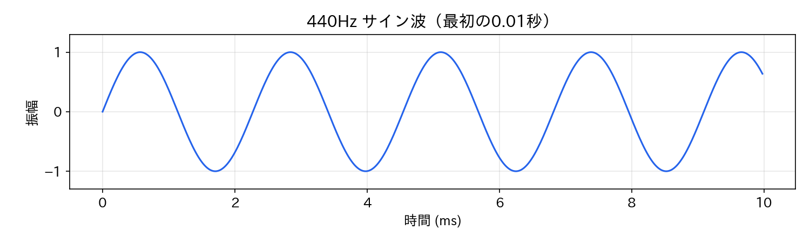
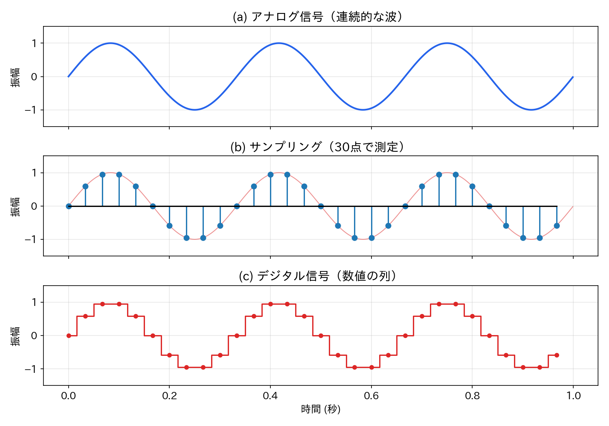
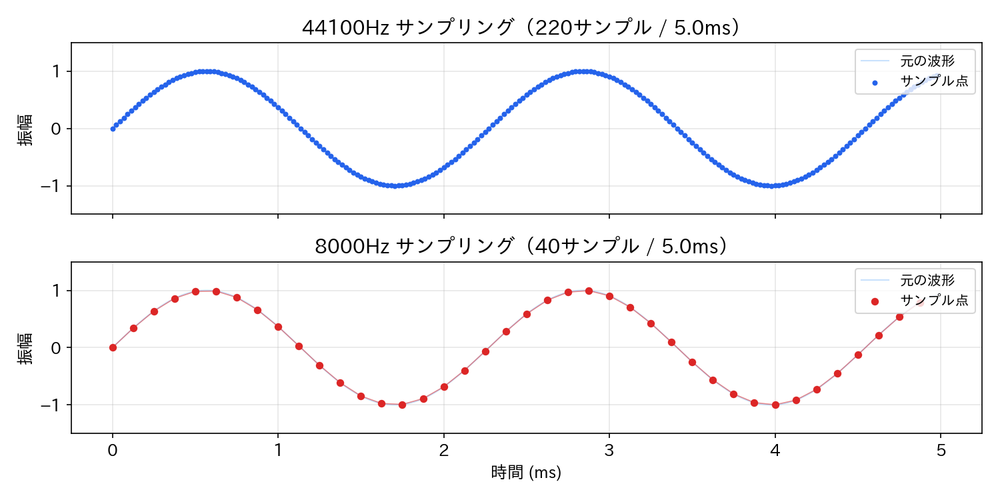
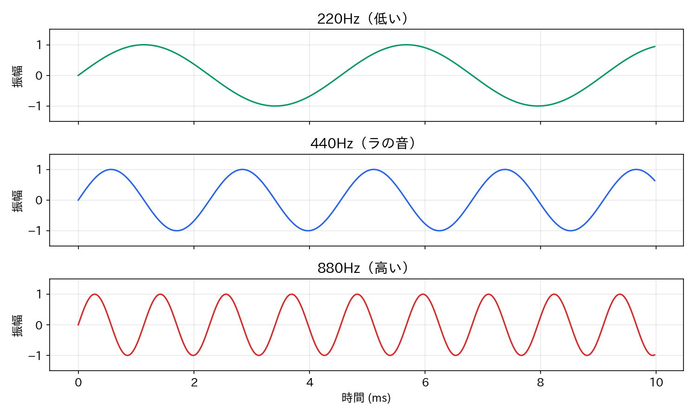

Lesson 1: 音とは何か・デジタル音の基礎¶
このレッスンで学ぶこと¶
- 音の物理的性質（振動、周波数、振幅）を理解する
- Pythonでサイン波を生成し、音を鳴らす
- アナログ音声とデジタル音声の違いを理解する
- サンプリングと量子化の仕組みを知る
まず「音とは何か」を理解し、Pythonで最初の音を鳴らすところまで進みましょう。
環境セットアップ¶
Python回は Google Colab 上で実行します。ブラウザだけで動くので、環境構築は不要です。Sonic Pi を使う回ではローカル環境が必要になりますが、それは Lesson 3 で案内します。
Colab のノートブックを開いたら、最初に以下のセルを実行してください。本書の付属ライブラリ audio_lib がインストールされ、音の生成・再生・可視化がすぐに使えるようになります。
# --- 最初に1回だけ実行 ---
import sys
try:
import google.colab
!pip install -q japanize-matplotlib
!git clone -q https://github.com/ggszk/simple-sound-programming.git
sys.path.append('/content/simple-sound-programming')
except ImportError:
# ローカル環境の場合（付録参照）
sys.path.append('..')
from audio_lib.notebook import setup_environment
setup_environment()
続けて、今回使うライブラリを読み込みます。
import numpy as np
from IPython.display import display
from audio_lib import sine_wave, sawtooth_wave, AudioSignal
from audio_lib.synthesis.note_utils import note_to_frequency, note_name_to_number
from audio_lib.notebook import play_sound, plot_waveform
これで準備完了です。
1.1 音とは何か¶
音とは空気の振動です。物体が振動すると周囲の空気に疎密の波が生じ、それが耳に届いて「音」として知覚されます。
この振動を最も単純な数式で表したものがサイン波（正弦波）です。
- \(f\): 周波数 (Hz) — 1秒間に振動する回数。音の高さを決めます
- \(t\): 時刻 (秒)
- 振動の大きさ（振幅）は音の大きさ（音量）を決めます
周波数が大きいほど高い音、振幅が大きいほど大きい音になります。
1.2 最初の音を鳴らそう¶
まずは audio_lib を使って、たった1行で音を作ってみましょう。
sine_wave() は周波数と長さを指定するだけでサイン波を生成する関数です。戻り値の signal は AudioSignal というオブジェクトで、音のデータとサンプリングレート（後述）をセットで保持しています。
生成した音を確認してみましょう。f"..." は f-string と呼ばれる書き方で、{} の中に変数や式を埋め込めます（Python 3.6 以降の機能）。
print(f"データの長さ: {signal.num_samples} サンプル")
print(f"サンプリングレート: {signal.sample_rate} Hz")
print(f"長さ: {signal.duration} 秒")
44100個の数値で1秒間の音が表現されています。この数値の並びが音の正体です。
波形を見る¶
音のデータをグラフに描くと波形が見えます。最初の0.01秒（約4.4周期分）を表示してみましょう。
きれいに上下を繰り返す曲線が見えるはずです（図1.1）。これがサイン波の波形で、0.01秒の間に約4.4回振動しています（440Hz × 0.01秒 = 4.4回）。

音を再生する¶
セルを実行すると、再生プレーヤーが表示されます。再生ボタンを押して聞いてみましょう。
純粋で素朴な「ピー」という音が聞こえます。これが最も基本的な音であるサイン波です。
1.3 中身を見てみよう — サイン波の原理¶
sine_wave(440, 1.0) の中では何が起きているのでしょうか。audio_lib を使わずに書いてみましょう。
ここで NumPy というライブラリが登場します。NumPy は大量の数値をまとめて効率よく扱うためのライブラリで、音のように何万個もの数値を扱うプログラミングでは欠かせない道具です。セットアップセルで import numpy as np と読み込んであるので、np.〜 の形で使えます。
sample_rate = 44100 # 1秒あたりのサンプル数
duration = 1.0 # 長さ（秒）
frequency = 440 # 周波数（Hz）
# 時間軸の配列を作る
t = np.linspace(0, duration, int(sample_rate * duration), endpoint=False)
# サイン波の数式をそのまま書く
data = np.sin(2 * np.pi * frequency * t)
たったこれだけです。ポイントを順に見ていきましょう。
時間軸の配列¶
np.linspace() は、指定した範囲を等間隔に分割した数列を作る関数です。Pythonの range() に似ていますが、小数を扱えるのが特徴です。ここでは0秒から1秒までを44100等分した時刻の配列ができます。
これは「1秒間を44100回サンプリングする」ことに対応しています。
サイン波の計算¶
数式 \(y = \sin(2\pi f t)\) をそのままPythonに写しただけです。ここで NumPy の便利さが発揮されます。t は44100個の数値が入った配列ですが、np.sin() に渡すと全要素に対してサイン関数が一括で適用されます。for ループを書く必要はありません。結果は -1.0 から 1.0 の範囲の数値が44100個並んだ配列になります。
audio_lib との対応¶
素のPythonで作った data（NumPy配列）と sample_rate を AudioSignal にまとめると、sine_wave() の戻り値と同じものが得られます。
audio_lib はこのような「配列 + サンプリングレート」のペアを便利に扱うためのラッパーです。原理を理解した上でライブラリを使えば、中身がブラックボックスにならずに済みます。
1.4 アナログとデジタル — 音のデータとは¶
1.1 で「音は空気の振動」と説明しました。現実世界の音は、時間とともに滑らかに変化する連続的な波です。このような連続的な信号をアナログ信号といいます。
一方、コンピュータは連続的なデータを直接扱えません。扱えるのは数値の列、つまり「とびとびの値」だけです。そこで、アナログ信号を一定の時間間隔で「測定」し、その瞬間の値を数値として記録します。このように離散的な数値で表現された信号をデジタル信号といいます。
1.3 で作った data を思い出してください。
この data は44100個の数値が並んだ配列です。これこそがデジタル音声の正体で、連続的なサイン波を44100個の「点」で近似したものです。数値の列をつなげると、元の滑らかな波形が再現されます。
アナログからデジタルへの変換¶
アナログ信号をデジタル信号に変換する過程には2つのステップがあります。
- サンプリング（標本化）: 一定の時間間隔で波の値を測定する → 時間軸を離散化
- 量子化: 測定した値を有限の精度の数値で表現する → 振幅を離散化
図1.2 にこの過程を示します。(a) の連続的な波を一定間隔で測定し（b）、数値の列として記録する（c）という流れです。

CDに録音された音楽も、マイクで拾った音声も、コンピュータ上ではすべてこのような数値の列として扱われています。
1.5 サンプリング¶
ここまでで「サンプリングレート44100」という数字が何度か出てきました。これはサンプリングの間隔を決めるパラメータです。
| 用語 | 説明 | 代表的な値 |
|---|---|---|
| サンプリングレート | 1秒間のサンプル数 | 44100 Hz（CD品質） |
| ナイキスト周波数 | 記録可能な最高周波数（サンプリングレートの半分） | 22050 Hz |
| ビット深度 | 1サンプルあたりの精度（量子化の細かさ） | 16bit, 24bit |
なぜ44100Hz なのか¶
人間の耳が聞き取れる周波数の上限はおよそ20000Hz（20kHz）とされています。ナイキストの定理によると、ある周波数の音を正確に記録するには、その2倍以上のサンプリングレートが必要です。
20000Hz の音を記録するには40000Hz 以上のサンプリングレートが必要になります。CD規格の44100Hz は、可聴域を十分カバーしつつ多少の余裕を持たせた値です。
サンプリングレートの違いを体験する¶
サンプリングレートを下げるとどうなるか、聞き比べてみましょう。ここではサイン波ではなくノコギリ波を使います。ノコギリ波は Lesson 2 で詳しく扱いますが、サイン波より豊かな成分を含む波形です。サイン波は単純な音なのでサンプリングレートを下げても違いが出にくいのに対し、ノコギリ波なら違いがはっきりと聞き取れます。
# CD品質（44100Hz）
saw_cd = sawtooth_wave(440, 1.5, sample_rate=44100)
# 電話品質（8000Hz）
saw_tel = sawtooth_wave(440, 1.5, sample_rate=8000)
display(play_sound(saw_cd, "CD品質 (44100Hz) ノコギリ波"))
display(play_sound(saw_tel, "電話品質 (8000Hz) ノコギリ波"))
電話品質の方はこもった音に聞こえるはずです。図1.3 を見ると、8000Hz ではサンプル点がまばらで元の波形を十分に捉えきれていないことがわかります。ナイキスト周波数が4000Hz となり、それ以上の倍音が記録できないためです。

エイリアシング¶
ナイキスト周波数を超える音を無理に記録しようとすると、エイリアシング（折り返し歪み）が発生し、元とは異なる周波数の音になってしまいます。
# 5000Hzの音を異なるサンプリングレートで記録
high_cd = sine_wave(5000, 0.5, sample_rate=44100) # 正確に記録できる
high_tel = sine_wave(5000, 0.5, sample_rate=8000) # エイリアシング発生
display(play_sound(high_cd, "5000Hz（CD品質: 正確）"))
display(play_sound(high_tel, "5000Hz（電話品質: エイリアシング）"))
5000Hz は8000Hz のナイキスト周波数（4000Hz）を超えているため、電話品質では元とは違う音程に聞こえます。デジタル音声を扱う際には、サンプリングレートの制約を常に意識する必要があります。
1.6 周波数と音の高さ¶
周波数が変わると音の高さが変わることを体験してみましょう。
frequencies = [220, 440, 880, 1760]
for freq in frequencies:
sig = sine_wave(freq, 1.0)
display(play_sound(sig, f"{freq}Hz"))
220Hz → 440Hz → 880Hz → 1760Hz と、周波数が2倍になるごとに音が1オクターブ上がります。図1.4 を見ると、同じ時間幅の中で波の数が倍々に増えていく様子がわかります。

オクターブとは「周波数が2倍の関係にある2つの音の間隔」のことです。人間の耳は周波数の比を音程として知覚するため、440Hz と 880Hz の「距離」は、220Hz と 440Hz の「距離」と同じに感じます。
1.7 振幅と音の大きさ¶
振幅を変えると音量が変わります。
volumes = [0.1, 0.3, 0.8, 1.0]
for vol in volumes:
sig = sine_wave(440, 1.0) * vol
display(play_sound(sig, f"440Hz 音量={vol}"))
signal * 0.3 のように AudioSignal に数値を掛けると、全サンプルの値が一律にスケーリングされます。振幅が小さくなるほど音は小さくなります。
1.8 WAVファイルへの保存¶
Colab 上では play_sound() ですぐに音を聞けますが、生成した音をファイルとして保存しておくと便利な場面があります。たとえば後のレッスンで Sonic Pi に読み込ませたり、手元にダウンロードしたりする場合です。
audio_lib で保存¶
AudioSignal の save() メソッドを呼ぶだけでWAVファイルが作られます。Colab の場合、左側のファイルパネルからダウンロードできます。
素のPythonで保存¶
内部では何が起きているか確認してみましょう。ここでは SciPy というライブラリの scipy.io.wavfile モジュールを使います。SciPy は NumPy を土台にした科学技術計算ライブラリで、WAVファイルの読み書きや信号処理など幅広い機能を提供しています。
from scipy.io import wavfile
sample_rate = 44100
data = np.sin(2 * np.pi * 440 * np.linspace(0, 2.0, 44100 * 2, endpoint=False))
# -1.0〜1.0 の float を 16bit 整数に変換
audio_16bit = (data * 32767).astype(np.int16)
wavfile.write("my_sine_raw.wav", sample_rate, audio_16bit)
.astype(np.int16) は NumPy 配列の型を変換するメソッドです。ポイントは次の2つです。
- 16bit整数への変換: WAVファイルは通常16bitの整数値（-32768 〜 32767）で音を記録します。Pythonの計算では -1.0 〜 1.0 の小数で扱い、保存時に変換します
- サンプリングレートの指定: ファイルにはサンプリングレートの情報も一緒に書き込まれます。再生ソフトはこの情報を読んで正しい速度で再生します
1.9 音名と周波数¶
音楽で使われる音名（ド、レ、ミ…）はそれぞれ決まった周波数に対応しています。この対応関係は平均律という仕組みで定められており、詳しくは Lesson 6 で扱います。ここでは予告として、ドレミファソラシドの周波数を確認しておきましょう。
audio_lib には音名と周波数を変換する関数が用意されています。
note_name_to_number("A4")— 音名（"A4" など）を MIDI番号（0〜127の整数）に変換しますnote_to_frequency(69)— MIDI番号を周波数（Hz）に変換します
MIDI番号は音の高さを整数で表す業界標準の番号で、A4（ラ）が69番です。
note_names = ["C4", "D4", "E4", "F4", "G4", "A4", "B4", "C5"]
jp_names = ["ド", "レ", "ミ", "ファ", "ソ", "ラ", "シ", "ド"]
print("音名 | 日本名 | MIDI番号 | 周波数 (Hz)")
print("-" * 45)
# zip() は2つのリストから要素を1つずつ取り出してペアにする関数
for name, jp in zip(note_names, jp_names):
midi_num = note_name_to_number(name)
freq = note_to_frequency(midi_num)
print(f" {name} | {jp:2s} | {midi_num} | {freq:.2f}")
音名 | 日本名 | MIDI番号 | 周波数 (Hz)
---------------------------------------------
C4 | ド | 60 | 261.63
D4 | レ | 62 | 293.66
E4 | ミ | 64 | 329.63
F4 | ファ | 65 | 349.23
G4 | ソ | 67 | 392.00
A4 | ラ | 69 | 440.00
B4 | シ | 71 | 493.88
C5 | ド | 72 | 523.25
A4（ラ）が440Hz であること、C4（ド）からC5（高いド）で周波数がちょうど2倍になっていること（261.63 × 2 ≈ 523.25）を確認してみてください。
まとめ¶
このレッスンで学んだことを整理します。
| 概念 | 内容 |
|---|---|
| 音の正体 | 空気の振動。サイン波が最も基本的な波形 |
| 周波数 (Hz) | 1秒間の振動回数。大きいほど高い音 |
| 振幅 | 振動の大きさ。大きいほど大きい音 |
| アナログとデジタル | 音は本来連続的（アナログ）。コンピュータでは数値の列（デジタル）として扱う |
| サンプリングと量子化 | 時間軸を等間隔で区切り（サンプリング）、振幅を数値で表す（量子化） |
| サンプリングレート | 1秒間のサンプル数。CD品質は44100Hz |
| ナイキストの定理 | サンプリングレートの半分の周波数までしか正確に記録できない |
| エイリアシング | ナイキスト周波数を超えた音を記録しようとすると起きる歪み |
| オクターブ | 周波数が2倍の関係。人間の耳は周波数の比を音程として知覚する |
使った audio_lib の関数¶
| 関数・クラス | 役割 |
|---|---|
sine_wave(freq, duration) |
サイン波を生成 |
sawtooth_wave(freq, duration) |
ノコギリ波を生成 |
AudioSignal(data, sample_rate) |
音データとサンプリングレートをまとめるクラス |
signal.save(filename) |
WAVファイルとして保存 |
plot_waveform(signal, duration) |
波形をグラフ表示 |
play_sound(signal, title) |
音を再生 |
次回予告¶
Lesson 2 では波形と音色を扱います。サイン波以外の波形（矩形波、ノコギリ波、三角波）を生成し、波形の違いが音色の違いになることを体験します。